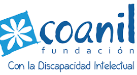

Sitio Web Coanil
Noticias, proyectos e información institucional de la fundación.
Portal Buk Coanil
Gestión de personas: marcaciones, liquidaciones y licencias.

Selecciona la plataforma a la que deseas ingresar
Noticias, proyectos e información institucional de la fundación.
Gestión de personas: marcaciones, liquidaciones y licencias.